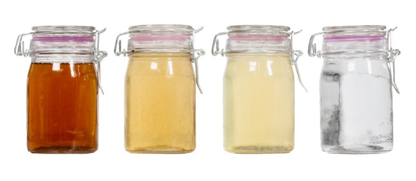

оборудование → водоподготовка → фильтры поперечного потока
Фильтры поперечного потока
С обратноосмотической мембраной
Предназначены для фильтрации воды в системах с замкнутым контуром.
Системы охлаждения, водоснабжения, отопления, вода для котельных установок, бассейны, фонтаны.
- Степень фильтрации: 1 мкм
- Рабочее давление, бар: 10
- Температура среды, °С: до 45
- Потребляемая мощность, кВт: 0,5


Функции:
- -удаление взвешенных частиц (песок и бактерии)
- -деминерализация, удаление солей и минералов
- -удаление воздуха из системы
Преимущества установки:
- -возможность добавлять химикаты
- -оперативный контроль пропускной способности
- -препятствие обрастанию систем
- -визуальный контроль прозрачности воды
Пробы
